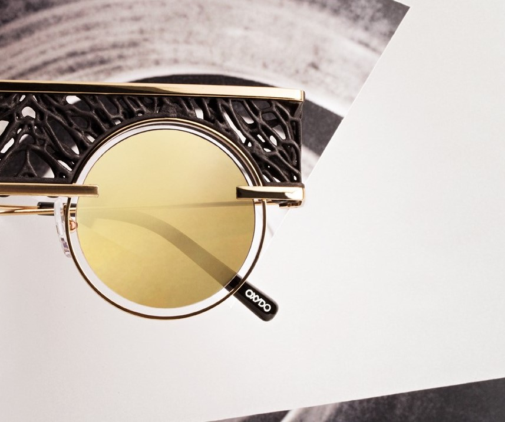
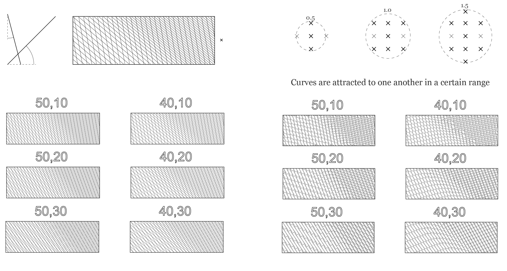
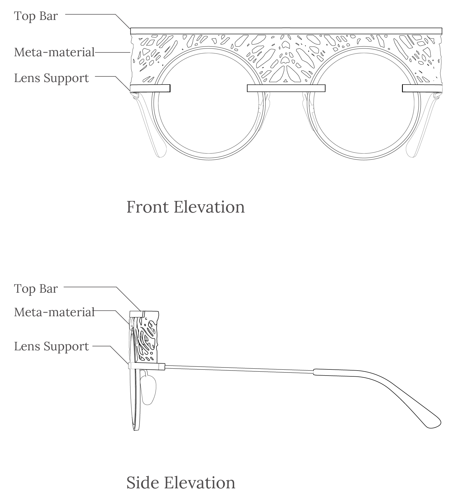
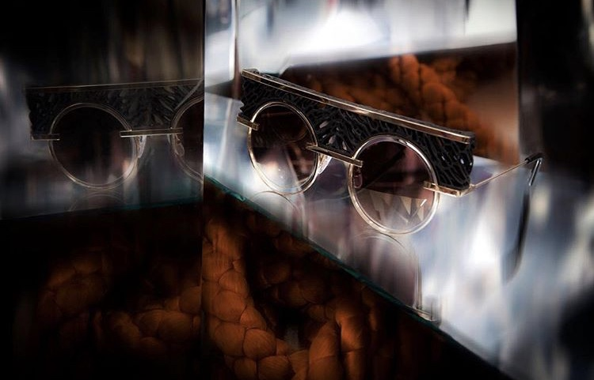

OXYDO
In the beginning of 2016, OXYDO approached us to do a limited edition 3D printed pair of sunglasses. We chose to highlight the formal advantages of additive manufacturing by replacing the glass frame with a “meta material” generated computationally.
Company Release: OXYDO

The "meta-material" holding the glasses together is based off of an interwoven form generated from
a hatch pattern algorithm that varies in spacing and angle.

The parameters we chose for our material created a visually dense symmetrical webbing

The frame designs were eventually chosen to highlight the meta-materials role in replacing structure.
